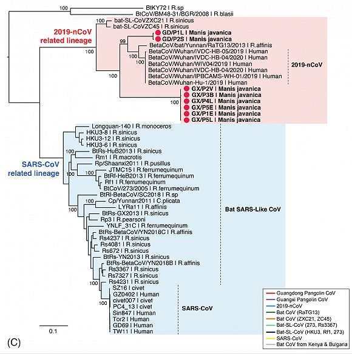

从实验室到病房，阻击新冠病毒
原文链接 备份链接 病毒的溯源、从动物到人的传播路径、人与人间的传播方式，这些研究还在进行中，抗病毒的疫苗和特效药的研发、验证，还只是初现曙光 文 |《财经》记者 孙爱民 信娜 辛颖 编辑 | 王小 谁也不会想到，2019年的最后一天， …
 图片来源：图虫
图片来源：图虫
记者：谢欣 编辑：许悦
“
在几批穿山甲样本中均检测到与新冠病毒相关的冠状病毒，两者相似度要大于此前蝙蝠身上发现的冠状病毒。
”
新型冠状病毒COVID-19从哪里起源，又是如何从自然界传播给人类，自从新冠肺炎疫情爆发后，这一问题一直被大众追问。病毒溯源对揭示新冠病毒来源及其进化规律、消除疫情源头和防止疫情扩散非常重要。
根据此前官方消息，目前的检测结果可以初步排除新型冠状病毒来源于家禽家畜。中国科学院武汉病毒研究所对新冠病毒基因组序列的比对显示，蝙蝠最有可能是新冠病毒的天然宿主。
但是，从根据对蝙蝠身上发现的冠状病毒与COVID-19新型冠状病毒的对比发现，两者基因组存在差异，这也意味着COVID-19新型冠状病毒的进化从蝙蝠到人，中间还至少差了一环，即所谓的中间宿主。
华南农业大学2月7日宣布，发现穿山甲是新型冠状病毒疫情的潜在中间宿主，但华南农业大学方面进一步表示，相关研究还尚未完成，研究结果尚未正式发表。也有专家推测，蛇可能会是潜在的中间宿主。
允许生命科学的研究人员发布预印本的交互式数据库BioRxiv，最近发表了题为《Identification of 2019-nCoV related coronaviruses in Malayan pangolins in southern China》（南中国马来亚穿山甲中对2019新型冠状病毒相关冠状病毒的鉴定）的最新研究论文，该论文通讯作者为香港大学新发传染性疾病国家重点实验室主任以及流感研究中心主任管轶教授，以及广西医科大学胡艳玲教授。
论文研究结果显示，在穿山甲中发现了与COVID-19新冠病毒相关的冠状病毒，这有望进一步揭示新冠病毒的起源与进化之路。
这是继华南农业大学之后，再次有研究学者提出穿山甲的新冠病毒“中间宿主”角色。
本次研究的对象为2017年8月至2018年1月期间广西海关在反走私行动中查获的18个冷冻穿山甲的（肺，肠，血液）等43个组织样品，以及2018年5月至7月之间收集的一批12只穿山甲的19个穿山甲样品。
研究人员通过对这两批穿山甲样本分别进行了高通量基因测序与qPCR检测，发现第一批样本中的六个（两个肺，两个肠，一个肺肠混合物，一个血液）样本中存在冠状病毒。第二批中的三个肺组织样本呈冠状病毒阳性。
研究团队还联系了广州海关技术中心，该中心重新检测在此前反走私行动中查获的5份存档的穿山甲样品，随后也在这些样本中发现了冠状病毒。

冠状病毒图谱，红点为穿山甲冠状病毒
对比发现，在这些穿山甲中发现的冠状病毒的基因组，与新型冠状病毒基因组相似率在85.5％—92.4％，并在系统进化树中代表了新型冠状病毒的两个亚型。其中GD/P1L和GD/P2S两个分支被认为与新冠病毒密切相关。
值得注意的是，新冠病毒与穿山甲冠状病毒的受体结合域的氨基酸序列相似性高达97.4%。
其中与细胞结合受体组合最关键的5个氨基酸序列组合上，两者结果一致。而这5个核心氨基酸序列此前尚未在除新冠病毒以外的其他病毒中发现。
但相比之下，蝙蝠冠状病毒与新冠病毒的受体结合域的氨基酸相似度要更低，仅为89.2％。系统发育分析表明，穿山甲冠状病毒并非新冠病毒的最接近亲缘关系。因此，研究团队推测，广东穿山甲冠状病毒与新冠病毒之间的氨基酸相似性可能是由于趋同进化而不是重组引起的。
简而言之，与蝙蝠冠状病毒相比，穿山甲冠状病毒与新冠病毒相似度更高，并且在关键的受体结合部分，5个关键的氨基酸序列组合一致。
穿山甲也是除蝙蝠以外唯一被新冠病毒相关冠状病毒感染的哺乳动物。但在穿山甲冠状病毒与新冠病毒之间是否还有中间进化的冠状病毒，目前尚不得而知。

原文链接 备份链接 病毒的溯源、从动物到人的传播路径、人与人间的传播方式，这些研究还在进行中，抗病毒的疫苗和特效药的研发、验证，还只是初现曙光 文 |《财经》记者 孙爱民 信娜 辛颖 编辑 | 王小 谁也不会想到，2019年的最后一天， …
原文链接 备份链接 “从严格意义上说，病毒不能算是活着。病毒非生非死，存在于生命与非生命的边界之上。若是处于细胞外，病毒只是存在而已，什么也不会发生。一旦病毒进入细胞，就变成了‘特洛伊木马’。病毒在繁殖时看起来是活着的，但从另外一个角度 …
原文链接 备份链接 昨日，Science 刊发了美国德克萨斯大学奥斯汀分校 Jason McLellan 团队的一篇关于新冠病毒的最新论文。该团队利用冷冻电镜技术解析出了新冠病毒 S 蛋白的超清结构。这一成果对开发疫苗和抗病毒药物有重要意 …
原文链接 备份链接 随着新冠肺炎（COVID-19）感染病例在近日突破 70,000 大关、中国疾控中心发迄今最大新冠病例分析、首次描述肺炎发病流行曲线，越来越多的新冠疫情爆发细节浮出水面。 与此同时，先前颇有群众基础的新冠病毒人为干预流 …
原文链接 备份链接 【财新网】（记者 杨睿）新冠病毒看起来远比SARS冠状病毒“狡猾”。一篇发表国际顶级医学期刊《新英格兰医学期刊》（NEJM）上的通讯文章首次报告称，德国研究人员从两名无症状感染者的咽拭子中分离出新冠病毒，表明无症状者 …